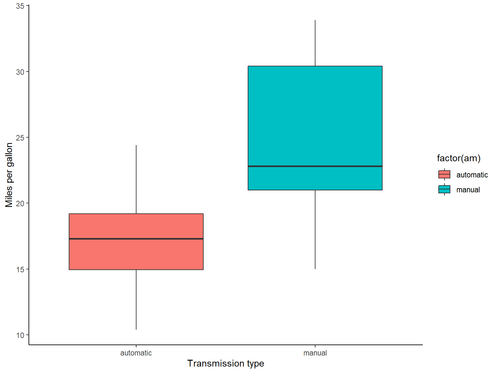
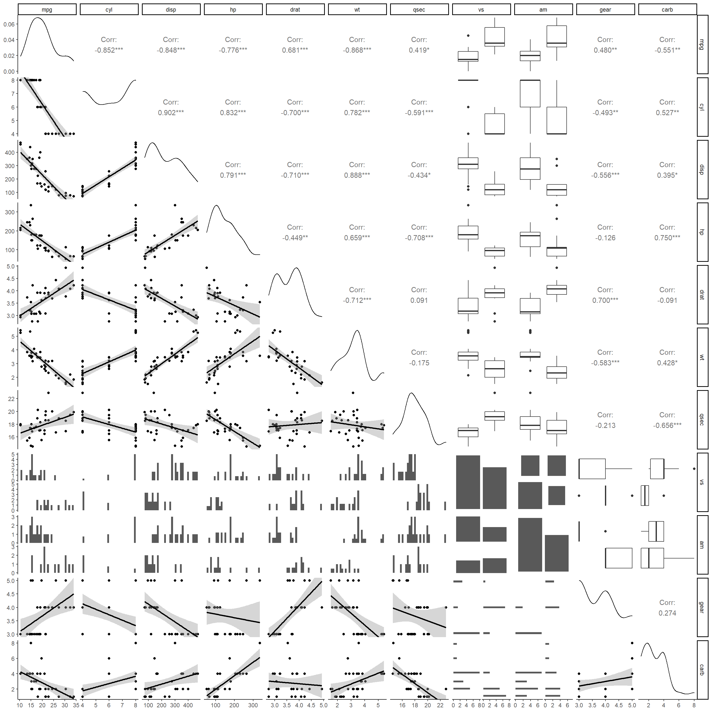
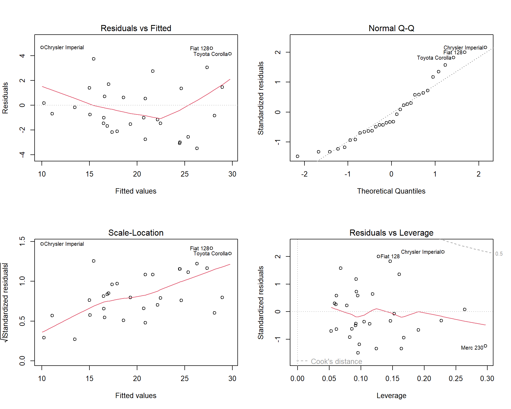

library(GGally)
library(dplyr)
library(ggplot2)
library(car)
library(broom)
library(printr)
library(pander)
library(kableExtra)
theme_set(theme_classic())Motor Trend Data Regression Analysis
Executive Summary
This analysis was done for Motor Trend, a magazine about the automobile industry. The task was to look at the mtcars data set of a collection of cars. They are interested in exploring the relationship between a set of variables and miles per gallon (MPG) (outcome).
They are particularly interested in the following two questions:
- “Is an automatic or manual transmission better for MPG”
- “Quantify the MPG difference between automatic and manual transmissions”
After concluding the analysis, the following points can be made:
- Manual transmission y for MPG, based on the evidence from the box plot, as well as the simple linear regression model.
- With a 95% confidence interval, we estimate the true difference between automatic and manual cars to be between 3.2 and 11.3
- Our simple linear model with transmission type as predictor shows us that the manual transmission cars have 7.24 (+/- 3.60) MPG more in fuel efficiency than automatic cars.
- As for a multivariate linear regression model, using a stepwise selection method, we found that the predictor variables
wt,qsecandambest predict mpg, explaining roughly 85% of it’s variation. This model was further tested with anova, the variance inflation factor, along with residual diagnostic plots. - This multivariate regression model tells us that, while adjusting for the other predictor variables
wtandqsec, manual transmission cars on average have 2.94 MPG (+/- 2.89) more in fuel efficiency than automatic cars.
Importing libraries
Exploratory Data Analysis
To know more about the data, you can look at the appendix section with title “About the data”.
head(mtcars) %>%
kbl() %>%
kable_styling(bootstrap_options = c("striped", "hover"))| mpg | cyl | disp | hp | drat | wt | qsec | vs | am | gear | carb | |
|---|---|---|---|---|---|---|---|---|---|---|---|
| Mazda RX4 | 21.0 | 6 | 160 | 110 | 3.90 | 2.620 | 16.46 | 0 | 1 | 4 | 4 |
| Mazda RX4 Wag | 21.0 | 6 | 160 | 110 | 3.90 | 2.875 | 17.02 | 0 | 1 | 4 | 4 |
| Datsun 710 | 22.8 | 4 | 108 | 93 | 3.85 | 2.320 | 18.61 | 1 | 1 | 4 | 1 |
| Hornet 4 Drive | 21.4 | 6 | 258 | 110 | 3.08 | 3.215 | 19.44 | 1 | 0 | 3 | 1 |
| Hornet Sportabout | 18.7 | 8 | 360 | 175 | 3.15 | 3.440 | 17.02 | 0 | 0 | 3 | 2 |
| Valiant | 18.1 | 6 | 225 | 105 | 2.76 | 3.460 | 20.22 | 1 | 0 | 3 | 1 |
Since vs and am are factor variables, we’ll be factorizing them to get more interpretable outputs in regression.
# factoring categorical variables for regression
mtcars <- mtcars %>%
mutate(am = factor(am, labels = c("automatic", "manual"))) %>%
mutate(vs = factor(vs))The question focuses on the am variable, which is transmission type - automatic or manual. To answer the question, we can plot a box plot to see the difference between automatic and manual.
Based on the box plot in the appendix, we can form a hypothesis that the manual cars have higher miles per gallon, which means it has higher fuel efficiency as compared to automatic cars. o test for this claim, we can use a statistical test such as the t test.
Two samples t test
panderOptions('table.split.table', '50')
pander(t.test(mtcars$mpg ~ mtcars$am))| Test statistic | df | P value | Alternative hypothesis | mean in group automatic | mean in group manual |
|---|---|---|---|---|---|
| -3.767 | 18.33 | 0.001374 * * | two.sided | 17.15 | 24.39 |
From the t test, we get a significant p-value, this means we can reject the null that there is no difference between auto and manual cars. In other words, the probability that the difference in these two groups appeared by chance is very low. Observing the confidence interval, we are 95% confident that the true difference between automatic and manual cars are between 3.2 and 11.3.
Since we’ll be fitting regression models on this data, it’s useful to look pairwise scatter plots as this gives us a quick look into the relationship between variables. This plot can be observed at the appendix.
Regression Model and Hypothesis testing
Simple Linear Regression Model
Since Motor Trends is more interested in the am variable, we’ll be fitting it to the model and observe the results.
fit_am <- lm(mpg ~ am, mtcars)
summary(fit_am)
Call:
lm(formula = mpg ~ am, data = mtcars)
Residuals:
Min 1Q Median 3Q Max
-9.3923 -3.0923 -0.2974 3.2439 9.5077
Coefficients:
Estimate Std. Error t value Pr(>|t|)
(Intercept) 17.147 1.125 15.247 1.13e-15 ***
ammanual 7.245 1.764 4.106 0.000285 ***
---
Signif. codes: 0 '***' 0.001 '**' 0.01 '*' 0.05 '.' 0.1 ' ' 1
Residual standard error: 4.902 on 30 degrees of freedom
Multiple R-squared: 0.3598, Adjusted R-squared: 0.3385
F-statistic: 16.86 on 1 and 30 DF, p-value: 0.000285The reference variable follows an alphabetical order, so interpreting the coefficients, note that the reference variable in this case is automatic transmission.
- The
intercepthere shows us that 17.15 is mean mpg for automatic transmission. - The
slopecoefficient shows us that 7.24 is the change in mean between the automatic and manual transmission (this can be observed from the box plot previously) - The
p-valuefor the slope coefficient tells us that the mean difference between auto and manual transmission is significant, and thus we can conclude that manual transmission is more fuel efficient as compared to automatic. - The r squared for our model is low, with only 36% of variation explained by the model. This makes sense because models with only one variable usually isn’t enough.
Simple linear regression is usually insufficient in terms of creating a good model that can predict mpg because there are other predictor variables or regressors that can help explain more variation in the model. Thus, this is where multivariate linear regression can help us fit more variables to produce a better model.
Multivariate Linear Regression Model
The goal is to create a model that best predicts mpg, or ultimately fuel efficiency. This means that each of the predictors variables should have a statistically significant p-value and are not correlated in any way (this will be tested with the Variance Inflation factor later on). Model fit can also be tested with anova, where you can observe whether adding a variable explains away a significant portion of variation (or looking at the p-value).
The challenge with Multivariate regression is which variables you should include or remove. Here we see what happens if we include all the variables in the data.
full.model <- lm(mpg ~ ., data = mtcars)
summary(full.model)
Call:
lm(formula = mpg ~ ., data = mtcars)
Residuals:
Min 1Q Median 3Q Max
-3.4506 -1.6044 -0.1196 1.2193 4.6271
Coefficients:
Estimate Std. Error t value Pr(>|t|)
(Intercept) 12.30337 18.71788 0.657 0.5181
cyl -0.11144 1.04502 -0.107 0.9161
disp 0.01334 0.01786 0.747 0.4635
hp -0.02148 0.02177 -0.987 0.3350
drat 0.78711 1.63537 0.481 0.6353
wt -3.71530 1.89441 -1.961 0.0633 .
qsec 0.82104 0.73084 1.123 0.2739
vs1 0.31776 2.10451 0.151 0.8814
ammanual 2.52023 2.05665 1.225 0.2340
gear 0.65541 1.49326 0.439 0.6652
carb -0.19942 0.82875 -0.241 0.8122
---
Signif. codes: 0 '***' 0.001 '**' 0.01 '*' 0.05 '.' 0.1 ' ' 1
Residual standard error: 2.65 on 21 degrees of freedom
Multiple R-squared: 0.869, Adjusted R-squared: 0.8066
F-statistic: 13.93 on 10 and 21 DF, p-value: 3.793e-07You can see that almost all (besides wt) the variables have p-values that are not significant
An issue with multivariate regression is certain variables may be correlated with each other, which can increase the standard error of other variables. To assess colinearity, we can use the Variance inflation factor, which r has a nifty function (vif) that does so.
rbind(vif(full.model)) %>%
kbl() %>%
kable_styling(bootstrap_options = c("striped", "hover"))| cyl | disp | hp | drat | wt | qsec | vs | am | gear | carb |
|---|---|---|---|---|---|---|---|---|---|
| 15.37383 | 21.62024 | 9.832037 | 3.37462 | 15.16489 | 7.527958 | 4.965873 | 4.648487 | 5.357452 | 7.908747 |
We see some of the variables have really high VIF (more than 10) which shows signs of colinearity.
Stepwise regression model
There are many ways to test for different variables to choose the best model, here I will be using the stepwise selection method to help find the predictor variables that can best explain MPG.
bestModel <- step(full.model, direction = "both",
trace = FALSE)
summary(bestModel)
Call:
lm(formula = mpg ~ wt + qsec + am, data = mtcars)
Residuals:
Min 1Q Median 3Q Max
-3.4811 -1.5555 -0.7257 1.4110 4.6610
Coefficients:
Estimate Std. Error t value Pr(>|t|)
(Intercept) 9.6178 6.9596 1.382 0.177915
wt -3.9165 0.7112 -5.507 6.95e-06 ***
qsec 1.2259 0.2887 4.247 0.000216 ***
ammanual 2.9358 1.4109 2.081 0.046716 *
---
Signif. codes: 0 '***' 0.001 '**' 0.01 '*' 0.05 '.' 0.1 ' ' 1
Residual standard error: 2.459 on 28 degrees of freedom
Multiple R-squared: 0.8497, Adjusted R-squared: 0.8336
F-statistic: 52.75 on 3 and 28 DF, p-value: 1.21e-11Using the stepwise method, we end up with 3 predictor variables, wt, qsec and am.
- all three variables have significant p-values, which suggest that they are all important addition to the model for predicting mpg.
- note that our am variable has a less significant p-value after adjusting for variabes
wtandqsec - after adjusting for other predictor variables, our coefficient for am went down to 2.94, and our pvalue became less significant.
- The r squared value denotes how much of the variation in mpg is explained. Our best model explains around 84% of the variation, which indicates it’s a good model.
Regression diagnostics
vif <- cbind(vif(bestModel))
colnames(vif) <- "VIF of bestmodel"
vif %>%
kbl() %>%
kable_styling(bootstrap_options = c("striped", "hover"), full_width = F)| VIF of bestmodel | |
|---|---|
| wt | 2.482951 |
| qsec | 1.364339 |
| am | 2.541437 |
The variance inflation factor of all three of our variables are small, which means they are not highly correlated.
Anova test on nested models
Anova is a useful statistical tool to use on nested models. With it, we can interpret what the effects of adding a new variable are on the coefficients and the p-values
fit0 <- lm(mpg ~ am, mtcars)
fit1 <- update(fit0, mpg ~ am + wt)
fit2 <- update(fit1, mpg ~ am + wt + qsec)
fit3 <- update(fit2, mpg ~ am + wt + qsec + disp)
fit4 <- update(fit3, mpg ~ am + wt + qsec + disp + hp)
anova(fit0, fit1, fit2, fit3, fit4) %>%
kbl() %>%
kable_styling(bootstrap_options = c("striped", "hover"))| Res.Df | RSS | Df | Sum of Sq | F | Pr(>F) |
|---|---|---|---|---|---|
| 30 | 720.8966 | NA | NA | NA | NA |
| 29 | 278.3197 | 1 | 442.57690 | 74.9945513 | 0.0000000 |
| 28 | 169.2859 | 1 | 109.03377 | 18.4757461 | 0.0002140 |
| 27 | 166.0099 | 1 | 3.27607 | 0.5551293 | 0.4629119 |
| 26 | 153.4378 | 1 | 12.57205 | 2.1303314 | 0.1563873 |
Looking at the results, we see how our best fit gives us a significant result (consistent with our stepwise selection model), but adding the variables disp and hp gives us p-values that are not significant, thus a worse model.
Residual diganostic plots
To diagnose a regression model it’s also important to look at the residual diagnostics, which can be seen at the appendix.
- From our residual vs fitted plot, we don’t see any distinct patterns, which is a good sign
- Our normal Q-Q plot shows that our standardized residuals are considerably normal, and doesn’t deviate that much from the line.
- scale-location is compares standardized residuals with fitted values, and we don’t see any patterns as well
- Our residual vs leverage plot don’t contain any systematic patterns.
Appendix
Code
library(GGally)
library(dplyr)
library(ggplot2)
library(car)
library(broom)
library(printr)
library(pander)
library(kableExtra)
theme_set(theme_classic())head(mtcars) %>%
kbl() %>%
kable_styling(bootstrap_options = c("striped", "hover"))# factoring categorical variables for regression
mtcars <- mtcars %>%
mutate(am = factor(am, labels = c("automatic", "manual"))) %>%
mutate(vs = factor(vs))panderOptions('table.split.table', '50')
pander(t.test(mtcars$mpg ~ mtcars$am))fit_am <- lm(mpg ~ am, mtcars)
summary(fit_am) full.model <- lm(mpg ~ ., data = mtcars)
summary(full.model) rbind(vif(full.model)) %>%
kbl() %>%
kable_styling(bootstrap_options = c("striped", "hover"))bestModel <- step(full.model, direction = "both",
trace = FALSE)
summary(bestModel)vif <- cbind(vif(bestModel))
colnames(vif) <- "VIF of bestmodel"
vif %>%
kbl() %>%
kable_styling(bootstrap_options = c("striped", "hover"), full_width = F)fit0 <- lm(mpg ~ am, mtcars)
fit1 <- update(fit0, mpg ~ am + wt)
fit2 <- update(fit1, mpg ~ am + wt + qsec)
fit3 <- update(fit2, mpg ~ am + wt + qsec + disp)
fit4 <- update(fit3, mpg ~ am + wt + qsec + disp + hp)
anova(fit0, fit1, fit2, fit3, fit4) %>%
kbl() %>%
kable_styling(bootstrap_options = c("striped", "hover"))About the data
A data frame with 32 observations on 11 (numeric) variables.
[, 1] mpg Miles/(US) gallon
[, 2] cyl Number of cylinders
[, 3] disp Displacement (cu.in.)
[, 4] hp Gross horsepower
[, 5] drat Rear axle ratio
[, 6] wt Weight (1000 lbs)
[, 7] qsec 1/4 mile time
[, 8] vs Engine (0 = V-shaped, 1 = straight)
[, 9] am Transmission (0 = automatic, 1 = manual)
[,10] gear Number of forward gears
[,11] carb Number of carburetorsBox plot
ggplot(mtcars, aes(factor(am, labels = c(
"automatic", "manual"
)), mpg, fill = factor(am))) +
geom_boxplot() +
labs(x = "Transmission type", y="Miles per gallon")
Pairs plot

Regression diagnostics plot
par(mfrow = c(2, 2))
plot(bestModel)
Session info
sessionInfo()R version 4.2.1 (2022-06-23 ucrt)
Platform: x86_64-w64-mingw32/x64 (64-bit)
Running under: Windows 10 x64 (build 22621)
Matrix products: default
locale:
[1] LC_COLLATE=English_United Kingdom.utf8
[2] LC_CTYPE=English_United Kingdom.utf8
[3] LC_MONETARY=English_United Kingdom.utf8
[4] LC_NUMERIC=C
[5] LC_TIME=English_United Kingdom.utf8
attached base packages:
[1] stats graphics grDevices utils datasets methods base
other attached packages:
[1] kableExtra_1.3.4 pander_0.6.5 printr_0.3 broom_1.0.0
[5] car_3.1-2 carData_3.0-5 dplyr_1.1.3 GGally_2.1.2
[9] ggplot2_3.3.6
loaded via a namespace (and not attached):
[1] tidyselect_1.2.0 xfun_0.40 purrr_1.0.2 colorspace_2.0-3
[5] vctrs_0.6.4 generics_0.1.3 htmltools_0.5.6.1 viridisLite_0.4.1
[9] yaml_2.3.5 utf8_1.2.2 rlang_1.1.1 pillar_1.9.0
[13] glue_1.6.2 withr_2.5.0 RColorBrewer_1.1-3 lifecycle_1.0.3
[17] plyr_1.8.7 stringr_1.5.0 munsell_0.5.0 gtable_0.3.0
[21] rvest_1.0.3 htmlwidgets_1.6.2 evaluate_0.16 labeling_0.4.2
[25] knitr_1.39 fastmap_1.1.0 fansi_1.0.3 highr_0.9
[29] Rcpp_1.0.11 scales_1.2.1 backports_1.4.1 webshot_0.5.3
[33] jsonlite_1.8.0 abind_1.4-5 farver_2.1.1 systemfonts_1.0.4
[37] digest_0.6.29 stringi_1.7.8 grid_4.2.1 cli_3.6.1
[41] tools_4.2.1 magrittr_2.0.3 tibble_3.2.1 tidyr_1.3.0
[45] pkgconfig_2.0.3 xml2_1.3.3 rmarkdown_2.15 reshape_0.8.9
[49] svglite_2.1.1 httr_1.4.4 rstudioapi_0.13 R6_2.5.1
[53] compiler_4.2.1